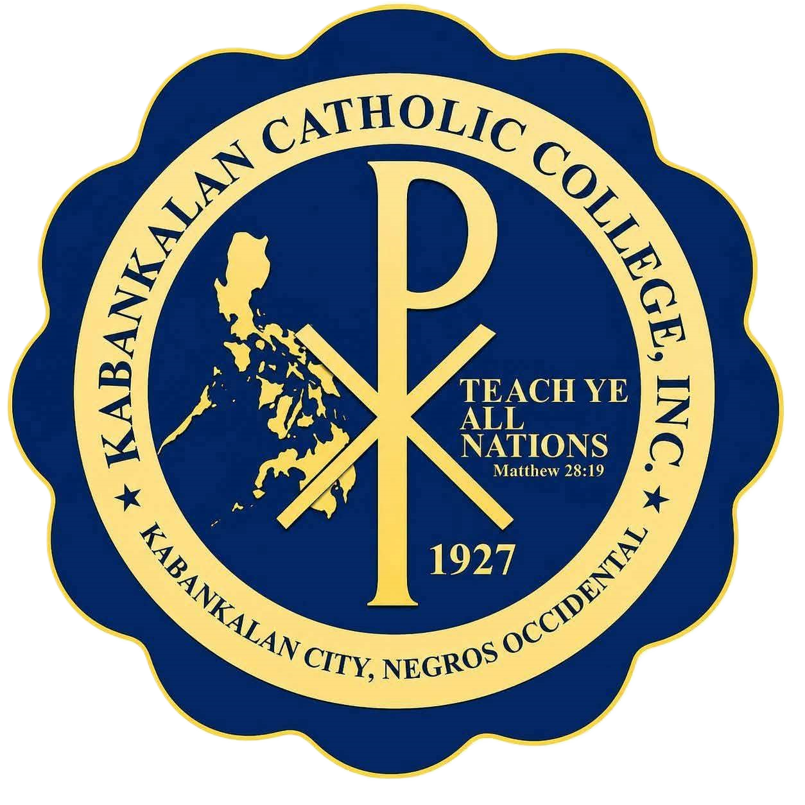

The Twelve Waves
The twelve (12) waves at the rim of the logo represent the twelve (12) apostles tasked by Christ to teach and evangelize. They symbolize the mission of spreading the teachings of Christ to all nations.
Kabankalan Catholic College, Inc. (KCC) is a Catholic school in Kabankalan City that serves its students and community through education, faith formation, and outreach programs. Its mission is to develop competent, compassionate, and Christ-centered individuals who use their knowledge to serve others.

The KCC seal represents the school's Catholic identity, mission, values, and commitment to education and service. Each symbol has a special meaning that reflects what KCC stands for.
The twelve (12) waves at the rim of the logo represent the twelve (12) apostles tasked by Christ to teach and evangelize. They symbolize the mission of spreading the teachings of Christ to all nations.
The school motto expresses KCC's untiring response to Christ's call for evangelization. Every KCCian should strive to be a model Christian and true patriot. In this way, they will become honest and responsible citizens who contribute positively to society.
The two stars in the seal symbolize the guiding light of Catholic Education. One star represents KCC's identity, being rooted in Catholic faith and values. The other star represents its mission to spread knowledge, truth, and service to others.
The Philippine map, specifically the island of Negros, represents the immediate world KCC aims to evangelize. The other islands represent the world which KCC hopes to reach through its mission of education, faith, and service.
The dark blue and gold seal symbolizes wisdom, integrity, and excellence. Dark blue represents knowledge and moral strength, while gold embodies the eternal light of Christ, guiding the KCCians to success and dignity. This version highlights KCC's prestige and commitment to form graduates who embody truth and honor.
The KCC seal is more than just a symbol. It represents the school's Catholic faith, educational mission, and dedication to forming responsible individuals who value truth, knowledge, integrity, and service.
Anchored in Catholic faith, academic excellence, and service to the community.
Kabankalan Catholic College, Inc., as builder of the future, is a Christ-centered learning community of accountable and socially responsible individuals, that leads positive change, responds to and serves the mission of the Diocese, the nation, and the world.
KCC commits to provide quality and inclusive Catholic education, rooted in the Gospel and driven by innovative research and meaningful community engagements, empowering its members to become effective agents of societal transformation.
Students
Programs
Years of Excellence
Year Founded
Education at Every Level
A Brief History of Kabankalan Catholic College, Inc.
Formerly Kabankalan Academy • Est. 1927In 1927, a group of incorporators gathered to establish a secondary school named Kabankalan Institute, which was later changed to Kabankalan Private Academy.
The first commencement exercises were held in 1940. Classes were suspended during the Second World War (1941–1944) and resumed in SY 1945–1946. A Junior Normal College also opened briefly for three years.
Through Fr. Thomas J. Cronin, parish priest of Kabankalan, the Columban Fathers negotiated to buy Kabankalan Academy, with most stockholders donating their shares in exchange for scholarship privileges.
Upon taking over, the Columban Fathers transferred the school site near the church. School directorship was not permanent, rotating alongside the reshuffling of the parish priest.
Through Fr. Cronin's efforts, general college and elementary departments opened in SY 1963–1964. Two years later, the St. Paul Sisters of Chartres arrived to assist in management, establishing KCC as southern Negros Occidental's center of learning.
Built on a hectare of land donated by the Zayco family, the College saw administration shift in 1983 from the Sisters of St. Paul to Diocesan priests headed by Msgr. Josefino I. Iledan as President, assisted by the Presentation Sisters.
On March 14, 1987, a fire razed the high school building, parish convent, and Old Catholic church. Immediate rehabilitation relocated the high school temporarily to the College campus while a new three-storey building rose on an adjacent lot.
The campus expanded with the St. Columban Arts Center—a socio-cultural venue for students and the community—and the concrete annex housing the canteen, textbook center, and College library.
Kabankalan became a new Diocese in 1988 under First Bishop Most Rev. Vicente M. Navarra, D.D. The Religious of the Good Shepherd served for a year, followed by eight years of senior academic leadership by lay members.
In 1996, Bishop Vicente Navarra, D.D., as Chairman of the Board of Trustees, invited the Carmelite Sisters of Our Lady (Carm.O.L.) to assist School President Msgr. Rogelio B. Cruz in school management.
Installed as second Bishop in 2003 and serving as School President in 2005, Most Rev. Patricio A. Buzon, SDB, D.D. established the KCC-Technological Center in Brgy. Talubangi in 2009. In 2011, Rev. Fr. Radny T. Bayog, PhD was appointed School President.
Most Rev. Louie P. Galbines, SThD, D.D. was installed as third Bishop of Kabankalan in 2018. In 2019, Rev. Fr. Eugene D. Lucerna II, PhD, RPsy, RGC (KCC High School Batch 1996) became the first alumnus appointed as School President.
On April 15, 2025, Bishop Galbines appointed Rev. Fr. Richard L. Lachica, MAEd as the new School President starting Academic Year 2025–2026.
The core values that guide every KCCian toward faith, excellence, and service. The KCC core values represent the principles and characteristics that every KCCian should practice in everyday life. These values serve as a foundation for building responsible, compassionate, and Christ-centered individuals.
A KCCian upholds a deep sense of unity and empathy, embodying shared purpose and mutual support within the school and wider community.
A KCCian is grounded in the living faith in God, guided by Gospel values that inspire words and actions in everyday life.
A KCCian embraces innovation in the pursuit of new ideas through research and creative problem-solving for the service of Church and society.
A KCCian is committed to moral responsibility and academic honesty, exemplifying Gospel-rooted principles in academic works, personal choices, and leadership.
A KCCian takes ownership of his/her decisions and actions, contributing responsibly to society and upholding the standards of a globally competent individual.
A KCCian cares for God's creation as a responsible steward entrusted to protect, sustain, and honor the world He has made.
A KCCian journeys together with others in communion, fostering collaboration and active participation in the mission of the Church and community.
Kindness, Christ-Centeredness, Creativity, Integrity, Accountability, Nurturing, and Synodality are the values that shape every KCCian. Let us live these values through our words, actions, and service to others.
Explore Places Across KCC, Inc.

The vibrant heart of KCC where students gather for assemblies, formation activities, and daily campus life.

A cultural and socio-civic venue hosting performances, academic gatherings, and community celebrations.

A quiet space for research, reading, and collaborative study supporting learners across all academic levels.

Located in Brgy. Talubangi, supporting technical, hands-on, and career-focused learning programs.